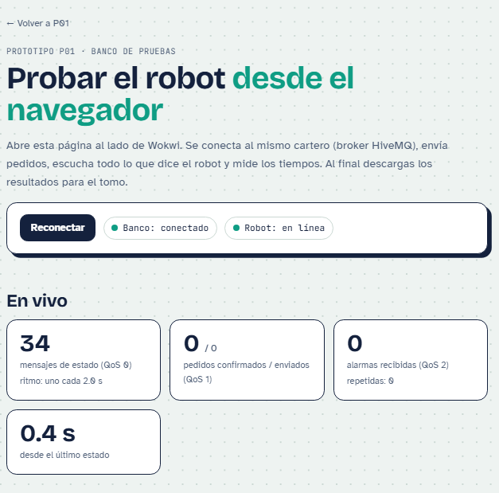
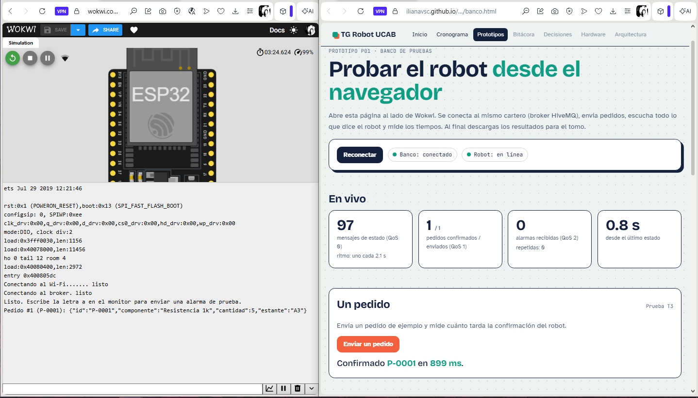
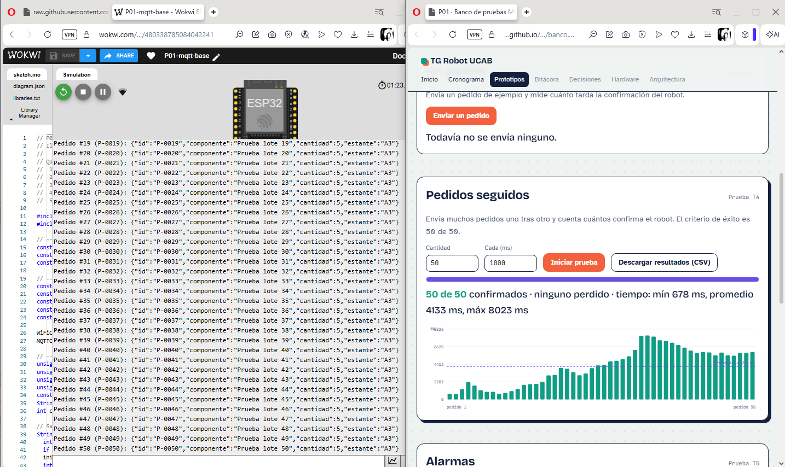
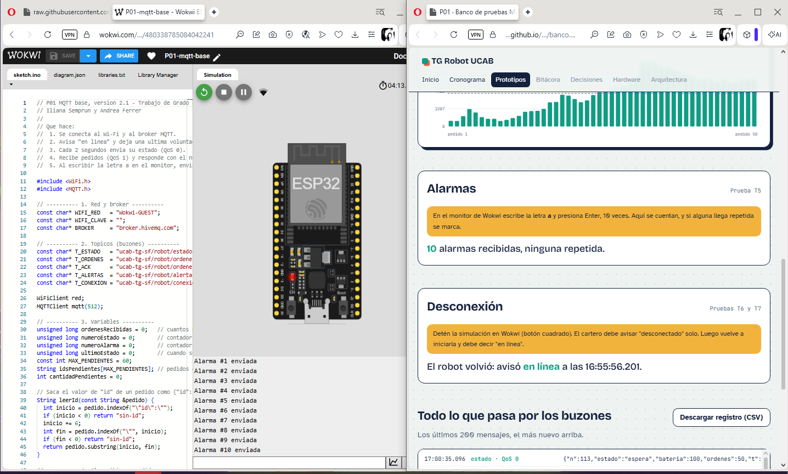
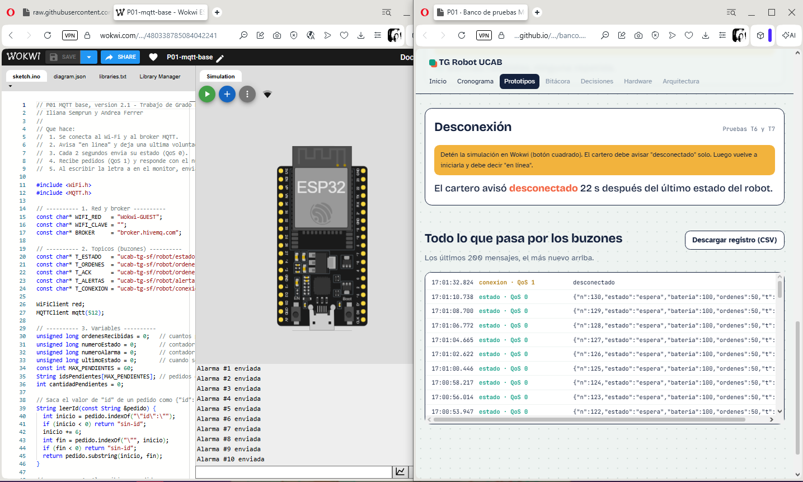
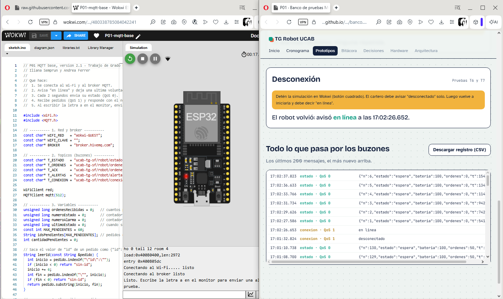
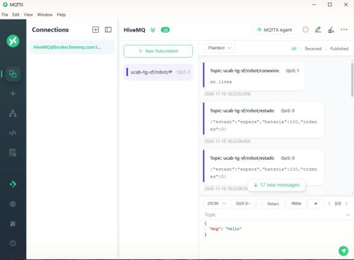

TRABAJO DE GRADO · ROBOT UCAB · PROTOTIPO P01
Así se hablan el robot y la app
El robot y la app nunca se hablan directo: los dos le entregan sus mensajes a un cartero central (el broker), y él los reparte a quien los esté esperando.
Míralo funcionar
Cada sobre es un mensaje. Toca los botones para ver qué pasa.
El robot avisa cada 2 segundos cómo está. Ese es el sobre verde.
Tres tipos de envío
En MQTT esto se llama QoS: qué tan seguro tiene que ser que el mensaje llegue.
Carta normal
Se envía y ya. Si una se pierde no importa, porque en 2 segundos llega otra.
estado del robotCertificada
El cartero insiste hasta que llega. Puede llegar repetida, pero nunca se pierde.
pedidos y confirmaciónEntrega única
Llega una vez y solo una. Es la más lenta, pero la más segura.
alarma antirroboLos buzones
Cada mensaje va a un buzón con nombre (un tópico). Quien está suscrito a ese buzón lo recibe.
ucab-tg-sf/robot/estadoRobot → app · QoS 0 · cómo está el robotucab-tg-sf/robot/ordenesApp → robot · QoS 1 · pedidos de componentesucab-tg-sf/robot/ordenes/ackRobot → app · QoS 1 · "recibí tu pedido"ucab-tg-sf/robot/alertasRobot → app · QoS 2 · alarmasucab-tg-sf/robot/conexionRobot y cartero · QoS 1 · "en línea" o "desconectado"
Pruébalo tú: banco de pruebas →
Una página que se conecta al mismo cartero, envía pedidos, cuenta las respuestas del robot y mide cuánto tardan. Ábrela al lado de Wokwi.
El código explicado
El programa del ESP32 tiene 6 partes. Cada tarjeta dice qué hace esa parte, en simple.
Le dice al robot a qué Wi-Fi conectarse y dónde está el cartero.
const char* BROKER = "broker.hivemq.com";Los nombres de los 5 tópicos. Todos empiezan igual para que sean solo nuestros.
const char* T_ORDENES = "ucab-tg-sf/robot/ordenes";Contadores de pedidos, estados y alarmas, y una fila de pedidos que faltan por confirmar.
String idsPendientes[60];Lee el número del pedido y lo anota en la fila. No responde ahí mismo: responde en el ciclo principal, que es más seguro.
String id = leerId(mensaje);Se conecta, avisa "en línea" y deja su última voluntad: si desaparece, el cartero avisa "desconectado".
mqtt.setWill(T_CONEXION, "desconectado", true, 1);Se repite sin parar: reconecta si hace falta, confirma pedidos, envía el estado cada 2 s y la alarma cuando escribes a.
mqtt.publish(T_ALERTAS, alarma, false, 2);Cambios de las versiones 2 y 2.1: la confirmación ahora devuelve el número del pedido (por ejemplo P-0007) y cada mensaje lleva un contador. Así se puede medir el tiempo de cada respuesta y detectar si algo se pierde o se repite. En la 2.1 el robot espera hasta 10 s al cartero y usa sesión persistente.
Qué probamos
Siete pruebas, de la más simple a la más exigente, hechas el 11 nov 2026 con el banco de pruebas. Las 7 pasaron. Toca cada imagen para verla grande.
El robot se conecta y avisa "en línea"
Llega al buzón conexión con QoS 1.

Envía su estado cada 2 segundos (QoS 0)
34 mensajes, uno cada 2,0 s.
Recibe un pedido y lo confirma con su número (QoS 1)
P-0001 confirmado en 899 ms (en la versión 1 tardó unos 8 s).

50 pedidos seguidos sin perder ninguno
50 de 50. Tiempo: mínimo 0,7 s, promedio 4,1 s, máximo 8,0 s.

10 alarmas con entrega única (QoS 2)
10 recibidas, ninguna repetida.

Si el robot se apaga, el cartero avisa "desconectado"
A los 22 s. Coincide con la teoría: 1,5 × 15 s de keep alive = 22,5 s.

El robot vuelve y se reconecta solo
Avisó "en línea" otra vez y el estado volvió a contar desde 1.

Los 50 pedidos
Cada barra es un pedido y su altura es lo que tardó la confirmación.
Una línea: setOptions(15, false, 10000)
El robot espera hasta 10 s la respuesta del cartero y le pide guardar la sesión: si se desconecta un momento, sus pedidos lo esperan.
QoS 1 y sesión persistente, juntos
QoS 1 garantiza la entrega mientras la sesión exista. Con sesión persistente no se pierde ningún pedido.
Las barras crecen por la fila
Se envió un pedido por segundo, más rápido de lo que responde el robot simulado. En la vida real no habrá tantos pedidos seguidos.
Datos: 50 pedidos (CSV) · registro de mensajes T4 a T7 (CSV)
Primera versión (10 nov 2026)
La primera prueba se hizo con MQTTX. Pasaron el estado, el aviso "en línea", el aviso "desconectado", la reconexión y un pedido con su confirmación (tardó unos 8 s por el simulador).




Lo que falta
En el simulador
- Nada: las 7 pruebas pasaron. ✓
- Opcional: un GIF corto del banco funcionando.
Con el robot real
- Medir el tiempo real entre pedido y confirmación.
- Conectarse desde el Wi-Fi del laboratorio.
- Usar un cartero privado, con clave, para las pruebas finales.
Archivos
- codigo/sketch.inoEl programa del ESP32, versión 2.1
- codigo/diagram.jsonLa placa en Wokwi
- codigo/libraries.txtLibrería usada: MQTT de Joel Gaehwiler
- banco.htmlEl banco de pruebas
- codigo/v1/sketch.inoEl programa de la versión 1
- Proyecto en WokwiPara abrir y correr la simulación
- datos/Resultados de las pruebas en CSV
Para los curiosos: lo técnico
- Placa: ESP32 DevKit C v4 simulada en Wokwi, red
Wokwi-GUEST. - Broker:
broker.hivemq.com, puerto 1883 para el ESP32 y 8884 (WebSocket seguro) para el banco de pruebas. Es público: solo para desarrollo. - Librería:
MQTTde Joel Gaehwiler. Se descartó PubSubClient porque solo publica con QoS 0. - Keep alive de 15 s, sesión persistente (clean session = false), espera de 10 s y última voluntad en
robot/conexioncon QoS 1 y retenido. - El tiempo de respuesta se mide en el banco: desde que sale el pedido hasta que llega su confirmación (ida y vuelta).
Ficha completa: README.md